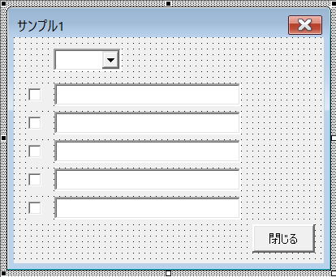

第23回.イベントプロシージャーの共通化
ユーザーフォームに部品コントロールを配置していくとき、同種のコントロールを繰り返し何個も配置することは良くあります。
コピペしながらようやく配置し終わったと思ったら、今度はVBAで同じイベントプロシージャーを何個も作成しなければならなくなります。
どうしても、同じ作業の繰り返しは何とかならないものかと思ってしまうのは当然の事でしょう。
サンプルのユーザーフォーム

コントロールの名称
チェックボックス：chk01～chk05
テキストボックス：txt01～txt05
動作の詳細およびVBAコードについては、第22回. コントロールの動的作成 こちらをご参照ください。
このフォームモジュールのVBAでは、5つのチェックボックスのChangeイベントが5つ並んでいます。
'チェックボックスのチェックを変更
Private Sub chk01_Change()
Me.txt01.Visible = Me.chk01.Value
End Sub
Private Sub chk02_Change()
Me.txt02.Visible = Me.chk02.Value
End Sub
Private Sub chk03_Change()
Me.txt03.Visible = Me.chk03.Value
End Sub
Private Sub chk04_Change()
Me.txt04.Visible = Me.chk04.Value
End Sub
Private Sub chk05_Change()
Me.txt05.Visible = Me.chk05.Value
End Sub
5つならコピペでも大したことありませんが、
さらに追加するときは・・・
10個以上になったら・・・
数が増えても追記しなくて済むように、イベントプロシージャーを1つにまとめます。
イベントプロシージャーの共通化のVBA
クラスモジュール
Option Explicit
'イベントを発生させるクラス（オブジェクト）
Private WithEvents pCheckBox As MSForms.CheckBox
'コントロールの親であるフォーム
Private pForm As MSForms.UserForm
'対応するコントロールを設定するプロパティ
Public Property Set CheckBox(ByVal aCheckBox As MSForms.CheckBox)
Set pCheckBox = aCheckBox
Set pForm = aCheckBox.Parent
End Property
'WithEventsのイベントプロシージャー
Private Sub pCheckBox_Change()
Dim sNum As String
sNum = Right(pCheckBox.Name, 2)
pForm.Controls("txt" & sNum).Visible = pCheckBox.Value
End Sub
'テキストボックスの存在確認：エラーを使った簡易コードにしています
Private Function GetTextBox(ByVal sNum As String) As MSForms.CheckBox
On Error Resume Next
Set GetTextBox = pForm.Controls("txt" & sNum)
End Function
フォームモジュール
Option Explicit
'イベント補足クラスのコレクション
Private colEvent As New Collection
'初期処理
Private Sub UserForm_Initialize()
With Me.cmb件数
.Style = fmStyleDropDownList
.List = Array(0, 1, 2, 3, 4, 5)
End With
Call SetControlEvent("chk##")
Call ControlsUnVisibleAll
End Sub
'閉じるボタン
Private Sub btClose_Click()
Unload Me
End Sub
'チェックボックスをイベント処理クラスに設定
Private Sub SetControlEvent(ByVal sLike As String)
Dim clsEvent As clsEvent
Dim ctl As Control
For Each ctl In Me.Controls
If ctl.Name Like sLike Then
Set clsEvent = New clsEvent
Set clsEvent.CheckBox = ctl
colEvent.Add clsEvent
End If
Next
End Sub
'コンボボックスで数値を選択
Private Sub cmb件数_Change()
Dim i As Long
For i = 1 To Me.cmb件数.Value
Me.Controls("chk" & Format(i, "00")).Visible = True
Next
Call ControlsUnVisible(Me.cmb件数.Value)
End Sub
'指定数値以降のチェックボックスとテキストボックスを非表示
Private Sub ControlsUnVisible(Optional ByVal cnt As Long = 0)
Dim i As Long
For i = cnt + 1 To 5
Me.Controls("chk" & Format(i, "00")).Visible = False
Me.Controls("chk" & Format(i, "00")).Value = False
Me.Controls("txt" & Format(i, "00")).Visible = False
Next
End Sub
'全てのチェックボックスとテキストボックスを非表示
Private Sub ControlsUnVisibleAll()
Dim ctl As Control
For Each ctl In Me.Controls
Select Case TypeName(ctl)
Case "CheckBox", "TextBox"
ctl.Visible = False
End Select
Next
End Sub
第22回. コントロールの動的作成 こちらとの違いは太字部分だけになります。
WithEventsのイベントプロシージャーは、
WithEvents変数名_イベント名
これはVBAの規則となっています。
スペル間違いに注意してください。
イベントプロシージャーの共通化の問題点
コントロールの型ごとにWithEventsが必要
抽象型のMSForms.Controlでは、実行時に以下のエラーが発生します。
使えるイベントに制限があります
| Text Box |
Check Box |
Option Button |
Combo Box |
List Box |
Command Button |
|
| AfterUpdate | × | × | × | × | × | － |
| BeforeDragOver | 〇 | 〇 | 〇 | 〇 | 〇 | 〇 |
| BeforeDropOrPaste | × | × | × | × | × | × |
| BeforeUpdate | × | × | × | × | × | － |
| Change | 〇 | 〇 | 〇 | 〇 | 〇 | － |
| Click | － | 〇 | 〇 | 〇 | 〇 | 〇 |
| DblClick | 〇 | 〇 | 〇 | 〇 | 〇 | 〇 |
| DropButtonClick | 〇 | － | － | 〇 | － | － |
| Enter | × | × | × | × | × | × |
| Exit | × | × | × | × | × | × |
| KeyDown | 〇 | 〇 | 〇 | 〇 | 〇 | 〇 |
| KeyPress | 〇 | 〇 | 〇 | 〇 | 〇 | 〇 |
| KeyUp | 〇 | 〇 | 〇 | 〇 | 〇 | 〇 |
| MouseDown | 〇 | 〇 | 〇 | 〇 | 〇 | 〇 |
| MouseMove | 〇 | 〇 | 〇 | 〇 | 〇 | 〇 |
| MouseUp | 〇 | 〇 | 〇 | 〇 | 〇 | 〇 |
×：使用できません。
－：元々イベントが存在しません。
Enter
Exit
このあたりが使用できないところが厳しいところです。
例えば、
第16回.アクティブコントロールに色を付ける
第24回.イベントプロシージャーの共通化（Enter,Exit）
ただし、APIを使用したかなり難しいテクニックとなります。
イベントプロシージャーの共通化の雛形VBA
クラスモジュール
フォームモジュールの変数型と合わせれば何でも構いません。
Option Explicit
'イベントを発生させるクラス（オブジェクト）
Private WithEvents pTextBox As MSForms.TextBox
Private WithEvents pCheckBox As MSForms.CheckBox
Private WithEvents pOptionButton As MSForms.OptionButton
Private WithEvents pComboBox As MSForms.ComboBox
Private WithEvents pListBox As MSForms.ListBox
Private WithEvents pCommandButton As MSForms.CommandButton
'Get用にControlで別途格納
Private pControl As MSForms.Control
'コントロールの親フォーム
Private pForm As MSForms.UserForm
'対応するコントロールを設定するプロパティ
Public Property Get Control() As MSForms.Control
Set Control = pControl
End Property
Public Property Set Control(ByVal aControl As MSForms.Control)
Set pControl = aControl 'Get用にControlで別途格納
Set pForm = aControl.Parent 'コントロールの親フォーム
Select Case TypeName(aControl)
Case "TextBox"
Set pTextBox = aControl
Case "CheckBox"
Set pCheckBox = aControl
Case "OptionButton"
Set pOptionButton = aControl
Case "ComboBox"
Set pComboBox = aControl
Case "ListBox"
Set pListBox = aControl
Case "CommandButton"
Set pCommandButton = aControl
Case Else
'その他は無視
End Select
End Property
'引数サンプルとして、最もイベントの多いコンボボックスを掲載
Private Sub pComboBox_BeforeDragOver(ByVal Cancel As MSForms.ReturnBoolean, ByVal Data As MSForms.DataObject, ByVal X As Single, ByVal Y As Single, ByVal DragState As MSForms.fmDragState, ByVal Effect As MSForms.ReturnEffect, ByVal Shift As Integer)
Debug.Print TypeName(Me.Control) & "_BeforeDragOver"
End Sub
Private Sub pComboBox_Change()
Debug.Print TypeName(Me.Control) & "_Change"
End Sub
Private Sub pComboBox_Click()
Debug.Print TypeName(Me.Control) & "_Click"
End Sub
Private Sub pComboBox_DblClick(ByVal Cancel As MSForms.ReturnBoolean)
Debug.Print TypeName(Me.Control) & "_DblClick"
End Sub
Private Sub pComboBox_DropButtonClick()
Debug.Print TypeName(Me.Control) & "_DropButtonClick"
End Sub
Private Sub pComboBox_KeyDown(ByVal KeyCode As MSForms.ReturnInteger, ByVal Shift As Integer)
Debug.Print TypeName(Me.Control) & "_KeyDown"
End Sub
Private Sub pComboBox_KeyPress(ByVal KeyAscii As MSForms.ReturnInteger)
Debug.Print TypeName(Me.Control) & "_KeyPress"
End Sub
Private Sub pComboBox_KeyUp(ByVal KeyCode As MSForms.ReturnInteger, ByVal Shift As Integer)
Debug.Print TypeName(Me.Control) & "_KeyUp"
End Sub
Private Sub pComboBox_MouseDown(ByVal Button As Integer, ByVal Shift As Integer, ByVal X As Single, ByVal Y As Single)
Debug.Print TypeName(Me.Control) & "_MouseDown"
End Sub
Private Sub pComboBox_MouseMove(ByVal Button As Integer, ByVal Shift As Integer, ByVal X As Single, ByVal Y As Single)
Debug.Print TypeName(Me.Control) & "_MouseMove"
End Sub
Private Sub pComboBox_MouseUp(ByVal Button As Integer, ByVal Shift As Integer, ByVal X As Single, ByVal Y As Single)
Debug.Print TypeName(Me.Control) & "_MouseUp"
End Sub
'以下は使用不可
Private Sub pComboBox_AfterUpdate()
End Sub
Private Sub pComboBox_BeforeDropOrPaste(ByVal Cancel As MSForms.ReturnBoolean, ByVal Action As MSForms.fmAction, ByVal Data As MSForms.DataObject, ByVal X As Single, ByVal Y As Single, ByVal Effect As MSForms.ReturnEffect, ByVal Shift As Integer)
End Sub
Private Sub pComboBox_BeforeUpdate(ByVal Cancel As MSForms.ReturnBoolean)
End Sub
Private Sub pComboBox_Enter()
End Sub
Private Sub pComboBox_Exit(ByVal Cancel As MSForms.ReturnBoolean)
End Sub
フォームモジュール
Option Explicit
'イベント補足クラスのコレクション
Private colEvent As New Collection
Private Sub UserForm_Initialize()
'イベント補足クラスを作成しコレクションに追加
Dim clsEvent As clsEvent
Dim ctl As MSForms.Control
For Each ctl In Me.Controls
Select Case TypeName(ctl)
Case "TextBox", _
"CheckBox", _
"OptionButton", _
"ComboBox", _
"ListBox", _
"CommandButton"
Set clsEvent = New clsEvent
Set clsEvent.Control = ctl
colEvent.Add clsEvent
Case Else
'その他は無視
End Select
Next
End Sub
イベントプロシージャーの共通化の最後に
今回紹介した方法で1つにまとめられるのは大変便利だと思います。
コントロールを追加してもVBAの変更が極めて簡単に済んでしまいます。
前半の例でいえば、コンボボックスに入れられる数値を変更すればそれだけで完了してしまいます。
このような場合には、極めて有効な手段だと思います。
何より、もし特定のコントロールだけ特殊な処理をしたいと言ったときの改修範囲が大きくなってしまう可能性もあります。
コピペでイベントを作成していれば、当該コントロールのイベントだけ変更すれば済むものです。
クラスを使いイベントプロシージャーを共通化するか、
コピペで頑張って作ってしまうか、
どちらにするかを決定することをお勧めします。
同じテーマ「ユーザーフォーム入門」の記事
第17回.Enterキーで次のコントロールに移動する
第18回.２段階のコンボボックス
第19回.数値専用のテキストボックス
第20回.テキストボックスの各種イベント
第21回.ユーザーフォームの各種イベント
第22回.コントロールの動的作成
第23回.イベントプロシージャーの共通化
第24回.イベントプロシージャーの共通化（Enter,Exit）
第25回.簡易音楽プレーヤーの作成
第26回.プログレスバーを自作する
第27回.インクリメンタルサーチの実装
新着記事NEW ・・・新着記事一覧を見る
VBA100本ノック 100本目：WEBから100本ノックのリストを取得｜VBA練習問題（3月3日）
VBA100本ノック 99本目：自動席替え（行列と前後左右が全て違うように）｜VBA練習問題（3月2日）
VBA100本ノック 98本目：席替えルールが守られているか確認｜VBA練習問題（3月1日）
VBA100本ノック 97本目：Accessデータを取得（グループ集計）｜VBA練習問題（2月27日）
VBA100本ノック 96本目：Accessデータを取得（マスタ結合&抽出）｜VBA練習問題（2月26日）
VBA100本ノック 95本目：図形のテキストを検索するフォーム作成｜VBA練習問題（2月24日）
VBA100本ノック 94本目：表範囲からHTMLのtableタグを作成｜VBA練習問題（2月23日）
VBA100本ノック 93本目：複数ブックを連結して再分割｜VBA練習問題（2月22日）
VBA100本ノック 92本目：セルの色を16進で返す関数｜VBA練習問題（2月20日）
VBA100本ノック 91本目：時間計算（残業時間の月間合計）｜VBA練習問題（2月19日）
アクセスランキング ・・・ ランキング一覧を見る
1.最終行の取得（End,Rows.Count）｜VBA入門
2.RangeとCellsの使い方｜VBA入門
3.変数宣言のDimとデータ型｜VBA入門
4.マクロって何？VBAって何？｜VBA入門
5.Range以外の指定方法（Cells,Rows,Columns）｜VBA入門
6.セルのコピー&値の貼り付け（PasteSpecial）｜VBA入門
7.繰り返し処理（For Next)｜VBA入門
8.セルに文字を入れるとは（Range,Value）｜VBA入門
9.マクロはどこに書くの（VBEの起動）｜VBA入門
10.とにかく書いてみよう（Sub,End Sub）｜VBA入門
- ホーム
- マクロVBA応用編
- ユーザーフォーム入門
- イベントプロシージャーの共通化
このサイトがお役に立ちましたら「シェア」「Bookmark」をお願いいたします。
記述には細心の注意をしたつもりですが、
間違いやご指摘がありましたら、「お問い合わせ」からお知らせいただけると幸いです。
掲載のVBAコードは動作を保証するものではなく、あくまでVBA学習のサンプルとして掲載しています。
掲載のVBAコードは自己責任でご使用ください。万一データ破損等の損害が発生しても責任は負いません。